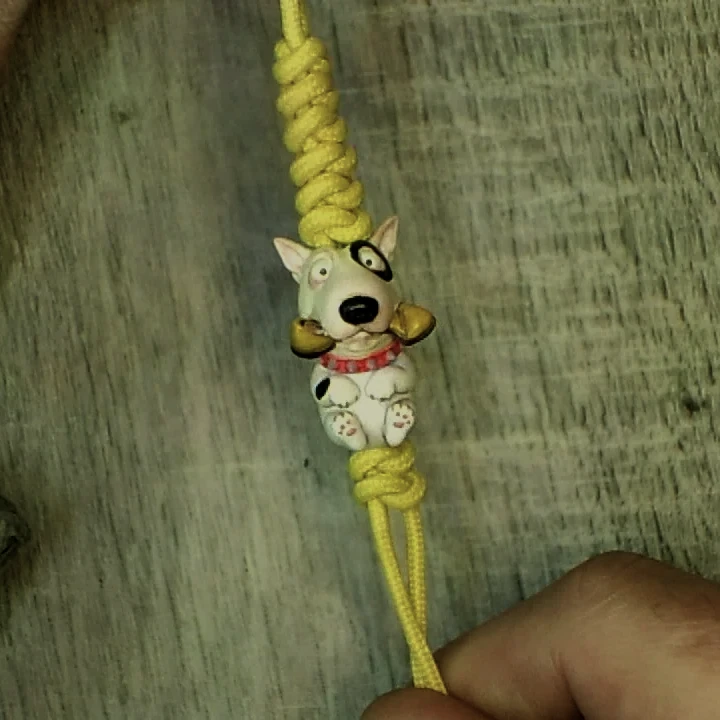
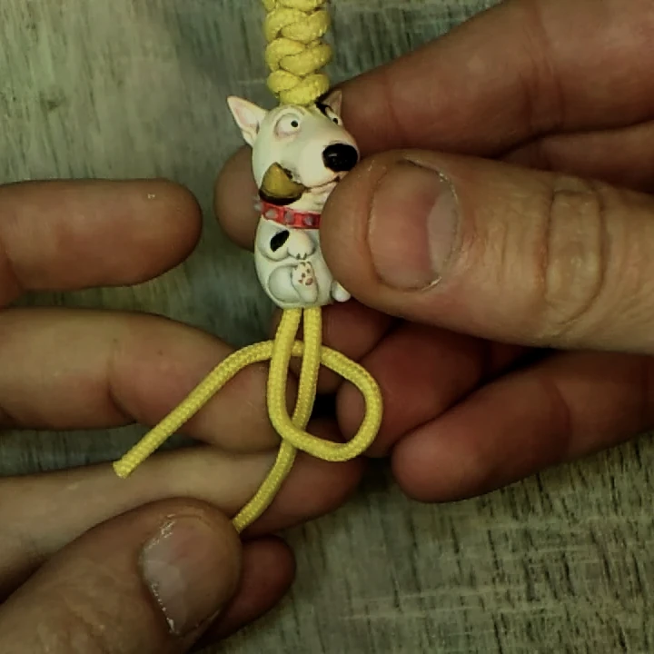
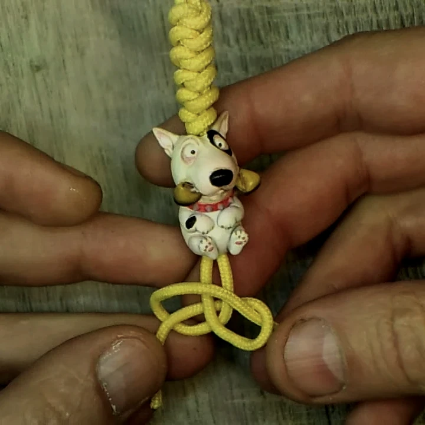
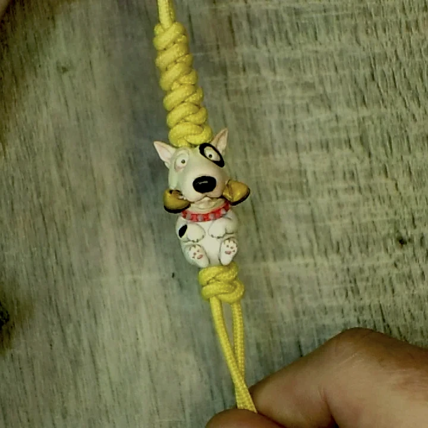

Змеиный узел — один из самых понятных и удобных узлов из паракорда, когда нужно аккуратно завершить шнур под бусиной без лишней громоздкости.
Чаще всего его показывают именно на примере темляка, потому что там он особенно уместен: компактный, легко читается визуально и хорошо фиксирует бусину на нужной высоте. Но сам принцип шире — тем же способом можно закончить не только темляк для ножа, но и брелок, подвес на молнию или другой небольшой проект из паракорда.
В этой инструкции показан не весь темляк целиком, а именно завершающий шаг: как провести шнур через бусину, собрать змеиный узел под ней и ровно его подтянуть. Если основа у Вас ещё не готова, сначала посмотрите материал «Плетение “змейка” из паракорда» или базовую страницу «Как сделать темляк из паракорда».
Содержание
- Что понадобится
- Когда такой узел особенно удобен
- Как завязать змеиный узел пошагово
- На что смотреть при затяжке
- Что делать дальше
- Видео процесса
- Частые вопросы
Что понадобится
- Готовая основа из паракорда или два свободных конца шнура, если Вы собираете узел отдельно.
- Темлячная бусина. В этом примере узел ставится именно под бусину.
- Ножницы. Нужны, если после примерки Вы будете подрезать концы.
- Зажигалка. Пригодится после окончательной сборки, когда нужно аккуратно обработать концы.
Когда такой узел особенно удобен
Змеиный узел хорош в тех случаях, когда не хочется делать слишком массивное завершение. Он достаточно плотный, чтобы держать форму под бусиной, но при этом не выглядит тяжёлым. Поэтому его удобно использовать и на коротком темляке, и на небольшом брелке, и на спокойной повседневной сборке.
Для работы с паракордом это ещё и хороший стартовый вариант: логика узла читается быстро, а результат получается аккуратным даже без очень долгой практики. Если позже захочется более объёмного завершения, следующим шагом уже можно пробовать бриллиантовый узел.
Как завязать змеиный узел из паракорда
Проведите шнур через бусину и начните первую петлю

Проденьте два конца шнура через бусину и выставьте её на нужную высоту. После этого одним концом сформируйте первую петлю под бусиной. На этом этапе важно не затягивать шнур раньше времени: сначала нужно спокойно собрать сам рисунок узла.
Заведите второй конец и соберите узел под бусиной

Второй конец проведите навстречу, чтобы собрать переплетение змеиного узла. Перед затяжкой посмотрите, чтобы оба контура оставались читаемыми, а бусина не ушла в сторону. Чем ровнее узел собран до затяжки, тем аккуратнее он потом сядет на шнуре.
Подтяните узел и выровняйте его под бусиной

Подтягивайте узел постепенно, без рывков, попеременно работая с обоими концами. В итоге узел должен сесть плотно под бусиной, удерживать её на месте и выглядеть симметрично. После этого можно уже окончательно решать вопрос с длиной хвостов и обработкой концов.
На что смотреть при затяжке
Самая частая ошибка — затянуть один конец слишком рано. Из-за этого узел перекашивается, а бусина разворачивается. Гораздо лучше сначала спокойно собрать форму, проверить симметрию и только потом постепенно её подтягивать.
Ещё один важный момент — положение бусины. Если она должна стоять строго по оси шнура, выравнивайте её сразу, пока узел ещё не сел намертво. После плотной затяжки исправлять положение уже заметно труднее.
Как сделать этот вариант с бусиной
Змеиный узел часто используется как финишный узел под темлячную бусину. Бусину надевают на шнуры и фиксируют узлом. Подробную инструкцию смотрите в материале как вплести бусину в темляк.
Какие бусины подойдут для этого темляка
Змеиный узел хорошо работает как стопор для бусины.
Что делать дальше
Если этот материал уже разобран, дальше лучше перейти к ближайшим связанным темам — без длинного списка и лишних повторов.
Видео процесса
Частые вопросы
Подойдёт ли змеиный узел для темляка на нож?
Да. Он компактный, понятный по логике и хорошо смотрится на темляке для ножа, особенно когда не хочется слишком массивного завершения.
Можно ли использовать этот узел без бусины?
Можно. Но чаще всего он особенно уместен именно под бусиной, когда нужно зафиксировать её на месте и аккуратно закончить сборку.
Чем змеиный узел отличается от бриллиантового?
Змеиный узел проще и компактнее. Бриллиантовый обычно объёмнее и даёт другой визуальный акцент.
Нужно ли сильно затягивать узел сразу?
Нет. Лучше сначала спокойно собрать рисунок, выровнять бусину и только потом постепенно подтягивать оба конца.